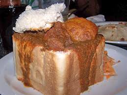

Bunny Chow

Description
Bunny Chow, originating from Durban, South Africa, is a street food classic made by hollowing out a loaf of bread and filling it with spicy curry. It can be made with chicken, lamb, beans, or vegetables, offering a variety of flavors.
What started as a quick and affordable meal has become an iconic dish representing South African creativity and culture. Eaten by hand, Bunny Chow is hearty, flavorful, and unforgettable.
Ingredients
- 1 medium loaf of white bread
- 500g chicken, lamb, beef, or beans (for filling)
- 2 tablespoons cooking oil
- 2 onions, chopped
- 2 cloves garlic, minced
- 2 tablespoons curry powder
- 2 large tomatoes, chopped (or 1 can diced tomatoes)
- 2 potatoes, diced
- 1 cup vegetable or chicken stock
- Fresh cilantro (for garnish)
- Salt and pepper to taste
Steps
- Cut the loaf of bread in half or quarters. Hollow out the inside, keeping the crust as a bowl.
- Heat oil in a pan and sauté onions and garlic until soft.
- Add curry powder and fry for 1 minute to release the aroma.
- Add tomatoes, potatoes, and your choice of meat or beans. Stir well.
- Pour in stock, season with salt and pepper, and simmer until the curry thickens and potatoes are cooked.
- Fill the hollowed bread with the hot curry mixture.
- Garnish with fresh cilantro and serve with the removed bread pieces for dipping.
Home